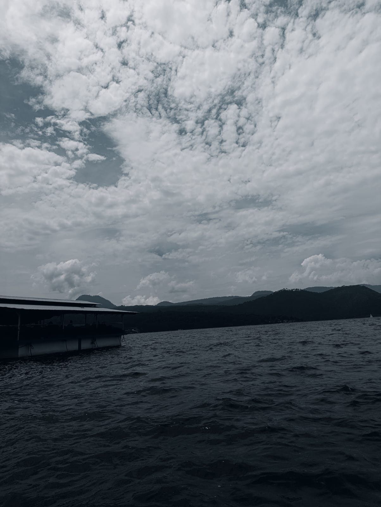

" Donde el agua es espejo del cielo "

" La Laguna de Valle de Bravo se encuentra en el municipio de Valle de Bravo, en el Estado de México, y es reconocida como el centro y el corazón de este Pueblo Mágico. No es una laguna natural, es una presa artificial conocida oficialmente como Presa Miguel Alemán, que fue construida entre 1938 y 1947 para generar electricidad y almacenar agua para la Ciudad de México. Con el paso de los años dejó de ser solo una obra hidráulica y se convirtió en el símbolo más importante del lugar, rodeada de casas con tejado rojo, bosques de pino y neblina que baja de los cerros en las mañanas. "
La Laguna de Valle de Bravo está en Valle de Bravo, Estado de México, a unas dos horas de la Ciudad de México, a 1,820 metros de altura, rodeada de montañas, bosque de pinos y encinos y casas blancas con techo rojo. Su nombre oficial es Presa Miguel Alemán y fue creada en 1947 por la gente para guardar agua y producir electricidad. Para llenarla tuvieron que inundar un pueblo viejito, el antiguo Valle de Bravo, por eso cuentan que en el fondo todavía está dormida una iglesia y que cuando baja mucho el agua a veces se alcanza a ver su cruz.
Es muy grande, mide 21 kilómetros de largo y 3 de ancho, y en algunas partes tiene hasta 40 metros de profundidad. Su agua es dulce, fría y de color azul con verde. No dejan usar lanchas de gasolina para que no se ensucie ni haga ruido, solo se permiten veleros de vela blanca, kayaks y lanchas de remos, por eso siempre se ve limpia y tranquila, como un espejo que copia el cielo, los cerros y las casas.
En el agua viven truchas arcoíris, lobina negra, patos, garzas y a veces ajolotes. Alrededor del bosque hay ardillas, zorros, colibrís, muchas mariposas y en invierno llegan las mariposas monarca. En la mañana la laguna amanece sin viento y parece un espejo perfecto, a medio día el viento la mueve y se llena de brillitos y de veleros, y arriba se ven los parapentes de colores que bajan del Cerro del Maguey. En la tarde el sol la pinta de naranja y rosa y en la noche las luces del pueblo se reflejan en el agua y parece que hay dos pueblos, uno arriba y otro abajo flotando.
Además la laguna es muy especial porque a pesar de ser una presa hecha por el hombre, con el tiempo la naturaleza la hizo suya. El agua que baja de los manantiales de los cerros, el bosque que la rodea y los animales que llegaron a vivir ahí hicieron que hoy parezca una laguna que siempre hubiera estado. Por eso cuando la gente llega por primera vez piensa que es natural, y es que ya no se nota donde termina lo que hizo el hombre y donde empieza lo que hizo la naturaleza.
Es muy importante porque da agua a las casas, produce electricidad, da trabajo a los lancheros, pescadores y guías, y es uno de los lugares turísticos más visitados de México, junto con Bacalar y Chapala. La gente va a pasear en velero, remar en kayak, volar en parapente, pescar y caminar por el malecón. Para cuidarla no se debe tirar basura, no se deben usar motores de gasolina y se deben cuidar los árboles del bosque y los peces.
La dirección oficial para llegar a la laguna es la del *Embarcadero Municipal*, que es la entrada principal: *Fray Gregorio Jiménez de la Cuenca s/n, Centro, 51200 Valle de Bravo, Estado de México.* 9549 Está a 4 cuadras del centro del pueblo, caminando hacia abajo. Si pones en Google Maps o Waze "Embarcadero Municipal Valle de Bravo" te lleva directo al muelle.
1. Tiene un pueblo abajo: Cuando la llenaron en 1947, taparon el pueblo viejo de Valle de Bravo. Dicen que abajo sigue la iglesia del siglo XVI.
2. No hay lanchas de gasolina: Es la única presa grande de México donde están prohibidas las lanchas de motor. Solo dejan veleros y kayaks para que el agua no se contamine.
3. Es el mejor lugar para volar: Desde el Cerro El Pinal y el Cerro La Escalonada despegan parapentes y alas delta. Desde arriba la laguna se ve como un corazón azul.
4. Cambia de tamaño: En lluvias puede crecer hasta 2 metros y en secas baja muchísimo. En 2024 bajó tanto que se vieron islas que nunca habían aparecido.